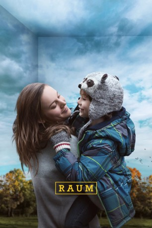

#3818 Raum
Auszeichnungen: 1 Oscars gewonnen für 3 Oscars nominiert 1 GoldenGlobes gewonnen 1 BAFTA-Awards gewonnen
 gesehen am 18.06.2016
gesehen am 18.06.2016
 
 IMDB-Wertung: 8.2 / 10
IMDB-Wertung: 8.2 / 10  IMDB-TOP-Platzierung: 153
IMDB-TOP-Platzierung: 153  Metascore: 0
Metascore: 0 
Brie Larson spielt eine junge Frau, die seit ihrer Entführung als Teenagerin in einem kleinen Schuppen lebt und dort ihren fünfjährigen Sohn Jack aufziehen muss, für den dieser kleine Raum alles ist, was er von der Welt kennt. Ihnen gelingt die Flucht, doch für den kleinen Jack bedeutet das, dass er eine völlig neue Welt kennenlernen muss. Und auch seine Mutter muss sich erst an das ihr inzwischen fremd gewordene Leben gewöhnen.
Jahr: 2015
Dauer: 117 Minuten
FSK: 12
Land: Irland Studio: UPITonspuren: DD5.1 - ,
Untertitel: Deutsch,
Auflösung: 1080p (1920x800) Größe: 9492 MB
Genre: Drama
Regisseur: Lenny Abrahamson
Drehbuch: Jason Lapeyre
Soundtrack:
Darsteller:
Datei: X:\2015(N-Z)\Raum (2015, FSK12, 1920x800).mkv seit 16.06.2016
Festplatte: HD 2015(A-Z)
 Es gibt insgesamt 161 Filme in der Gruppe '2015(N-Z)'
Es gibt insgesamt 161 Filme in der Gruppe '2015(N-Z)'